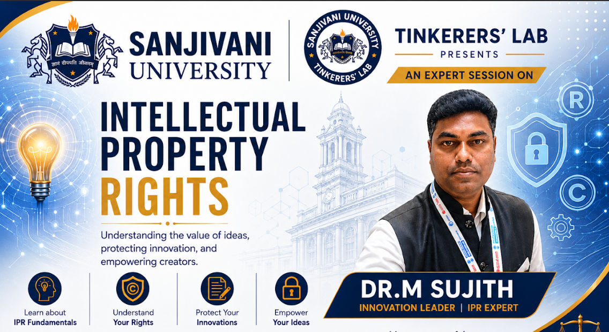
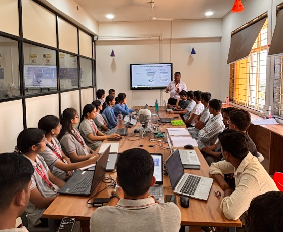
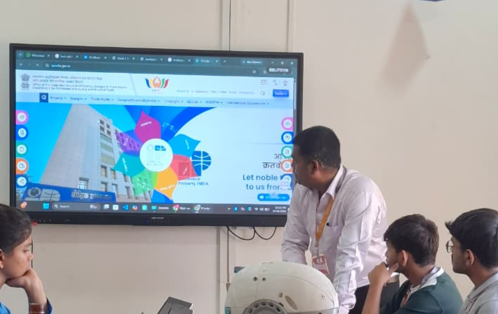
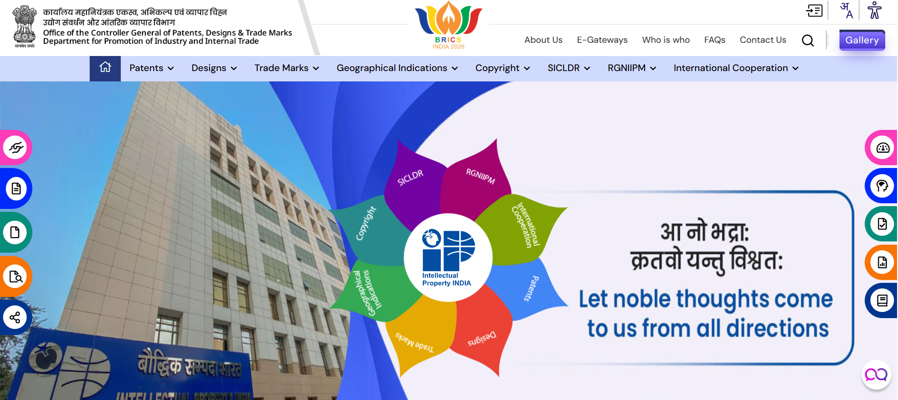
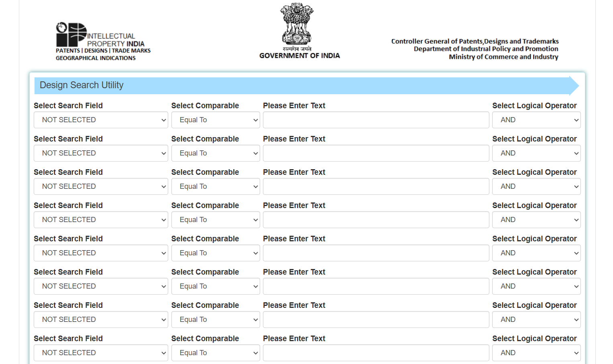
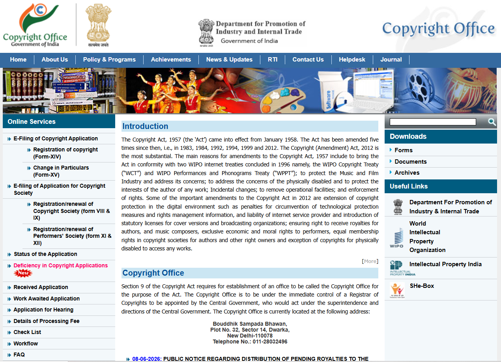
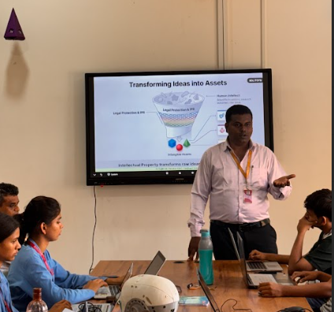

📜 Week 4 – Session 3: Intellectual Property Rights (IPR)
By Dr. M. Sujith, Innovation Leader and IPR Expert
📌 Introduction
An expert session on Intellectual Property Rights (IPR) was conducted by Dr. M. Sujith, Innovation Leader and IPR Expert, at the Sanjivani University Tinkerers' Lab. The session provided valuable insights into the importance of protecting innovations, creative works, brands, and technological developments. Participants learned about different forms of intellectual property, legal frameworks governing IPR in India, and various government initiatives that support innovators, start-ups, and entrepreneurs.

🧠 Understanding Intellectual Property Rights
Intellectual Property Rights (IPR) are legal rights granted to individuals or organizations to protect their creations, inventions, designs, trademarks, and artistic works. These rights encourage innovation by providing creators with exclusive ownership and recognition for their work.
Architecture of Protection
The protection of intellectual property exists at three levels:
- Local Context – Protection and awareness at institutional and regional levels.
- National Context – Protection under Indian laws and policies.
- Global Context – International protection and cooperation through organizations such as World Intellectual Property Organization (WIPO).
Anatomy of a Smart Product and IPR Components
A modern smart product consists of multiple intellectual property elements:
| Component | Type of Protection | Purpose |
|---|
| Product Shape and Appearance | Industrial Design | Protects visual design and aesthetics |
| Software, Documentation, Creative Content | Copyright | Protects original creative works |
| Sensors, Battery Systems, Innovations | Patent | Protects technical inventions and innovations |
| Brand Name and Logo | Trademark | Protects brand identity and recognition |
This demonstrates that a single product may be protected by multiple forms of intellectual property simultaneously.
Six Pillars of IPR Legislation
The session highlighted major legislative frameworks governing intellectual property protection in India:
- Patent Act, 1970 – Provides legal protection for inventions and technological innovations.
- Trade Marks Act, 1999 – Protects brand names, logos, and trademarks from unauthorized use.
- Copyright Act
- Designs Act
- Geographical Indications Act
- Protection of Plant Varieties and Farmers' Rights Act

🏛️ IP India Portal
IP India is the official Intellectual Property administration body under the Government of India. It manages the registration and protection of patents, trademarks, copyrights, designs, and geographical indications.
Key Functions
- Patent filing and examination
- Trademark registration and renewal
- Industrial design registration
- Copyright registration
- Geographical Indication (GI) registration
- Public search databases for patents, trademarks, and designs
- Awareness and support programs for innovators and startups


🔍 Design Search
A Design Search is conducted before filing an industrial design application to determine whether a similar design already exists.

Purpose
- Verify originality of a product design.
- Avoid infringement of existing registered designs.
- Increase chances of successful registration.
- Save time and filing costs.
Information Checked During Design Search
- Shape of the product
- Configuration
- Pattern
- Ornamentation
- Visual appearance
Examples: Shape of a smart watch, design of a bottle, exterior appearance of a consumer electronic product.
©️ Copyright
Copyright protects original creative and artistic works from unauthorized copying, reproduction, or distribution.

Works Protected Under Copyright
- Books and articles
- Computer software
- Music and songs
- Paintings and drawings
- Photographs
- Films and videos
- Architectural designs
Rights Granted to the Owner
- Reproduction rights
- Distribution rights
- Adaptation rights
- Public performance rights
- Translation rights
Duration: Lifetime of the creator + 60 years after death.
🔬 Patent Search
A Patent Search is conducted before filing a patent application to verify whether an invention is novel.
Objectives
- Check existing patents.
- Avoid duplication of inventions.
- Determine patentability.
- Understand technological trends.
Benefits
- Saves research and development costs.
- Improves quality of patent applications.
- Reduces chances of rejection.
🏷️ Trademark Search
A trademark search helps identify whether a brand name, logo, symbol, or slogan is already registered.
Benefits
- Prevents trademark conflicts.
- Avoids legal disputes.
- Helps create a unique brand identity.
- Increases chances of successful registration.
Examples: Company logos, product names, business slogans.
📋 Importance of IP Search Before Filing
- Identifies existing rights.
- Prevents duplication of work.
- Reduces filing errors.
- Saves time and money.
- Improves chances of approval.
- Supports commercialization and licensing opportunities.
🚀 Role of IPR in Start-ups and Innovation
For start-ups and innovators, intellectual property is often the most valuable asset.
Benefits
- Creates competitive advantage.
- Attracts investors.
- Increases company valuation.
- Protects innovative products.
- Generates revenue through licensing.
- Builds brand recognition.
🌍 Budapest Treaty and Microorganism Research
The Budapest Treaty plays an important role in patent applications involving microorganisms. It allows inventors to deposit microorganisms at recognized international depositories, eliminating the need for multiple deposits in different countries and simplifying international patent procedures.
🇮🇳 National IPR Policy 2016
The Government of India introduced the National IPR Policy 2016 to strengthen innovation and intellectual property protection.
Key Objectives
- Promote IPR awareness.
- Encourage innovation and creativity.
- Strengthen the Indian support ecosystem.
- Facilitate commercialization of innovations.
- Improve enforcement and protection mechanisms.
🤝 Government Support Ecosystem for Innovators
- AIM – Atal Innovation Mission – Promotes innovation and entrepreneurship among students and start-ups.
- Atal Innovation Seed Fund Scheme – Provides financial assistance to early-stage start-ups.
- NIDHI PRAYAS – Supports prototype development and proof-of-concept projects.
- MSME Support Programs – Offers funding, training, and assistance to micro, small, and medium enterprises.
- Start-up India Seed Fund Scheme – Provides financial support to start-ups for product development and market entry.
💰 Business Scaling and Loan Support (MUDRA Scheme)
- MUDRA Shishu – For very early-stage businesses. Support up to ₹50,000.
- MUDRA Kishor – For businesses in growth stages. Support from ₹50,000 to ₹1 lakh.
- MUDRA Tarun – For established businesses seeking expansion. Support from ₹1 lakh to ₹5 lakh.
- MUDRA Tarun Plus – Additional support for scaling successful enterprises. Support above ₹5 lakh.
⚖️ Patentability and Section 3 of the Patent Act
The Patent Act specifies certain inventions that are not patentable:
- Section 3(a): Frivolous inventions or inventions contrary to established scientific principles.
- Section 3(b): Inventions contrary to public order, morality, or harmful to society.
- Section 3(c): Discovery of scientific principles, abstract theories, or natural phenomena.
- Section 3(d): Discovery of a new form of a known substance without significant enhancement in efficacy.
- Section 3(e): Mere admixture resulting in aggregation of properties.
- Section 3(f): Rearrangement or duplication of known devices.
- Section 3(h): Methods related to agriculture and horticulture.
- Section 3(i): Methods of treatment, surgery, diagnosis, or therapy for humans and animals.
- Section 3(p): Traditional knowledge and known properties of traditionally used substances.
💡 Importance of Innovation and Idea Execution

A key lesson from the session was that an idea alone does not guarantee success. If an idea is presented publicly and another individual develops a stronger, more practical, or better-executed version, the opportunity may shift toward the person who can effectively implement and commercialize the concept. Therefore, innovators should focus on:
- Protecting their ideas through appropriate IP mechanisms.
- Developing prototypes quickly.
- Maintaining confidentiality before filing.
- Executing ideas effectively and efficiently.
📌 Key Takeaways
- IPR protects inventions, designs, brands, and creative works – encouraging innovation.
- Different forms of IP (patents, trademarks, copyrights, industrial designs) cover different aspects of a product.
- Before filing any IP application, a search (patent, design, trademark) is essential to avoid duplication and save costs.
- Government schemes like MUDRA, AIM, NIDHI, and Start-up India provide financial and technical support to innovators.
- Section 3 of the Patent Act lists what cannot be patented – crucial knowledge for any inventor.
- Idea alone is not enough; execution, protection, and commercialization are key to success.
🎯 Conclusion
The Intellectual Property Rights session provided a comprehensive understanding of how innovations, designs, creative works, and brands can be legally protected. Participants learned about patents, trademarks, copyrights, industrial designs, government support schemes, and the legal framework governing intellectual property in India. The session emphasized that innovation is not only about generating ideas but also about protecting, developing, and successfully implementing them. This knowledge will help students, researchers, and entrepreneurs transform their innovative concepts into valuable and legally protected assets.